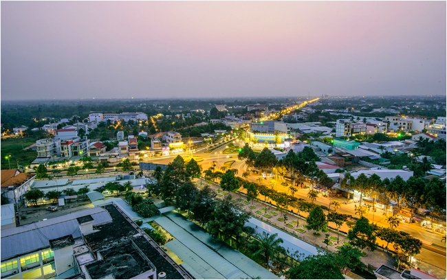
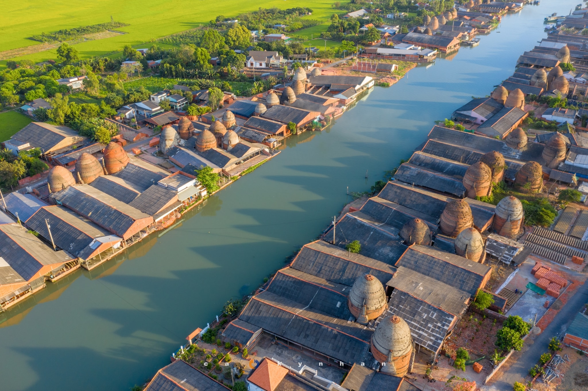
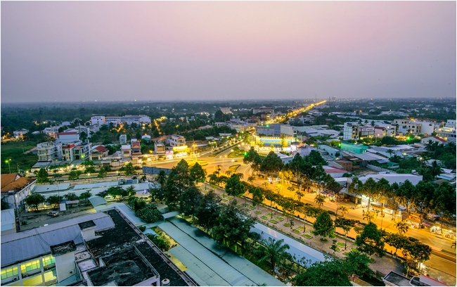
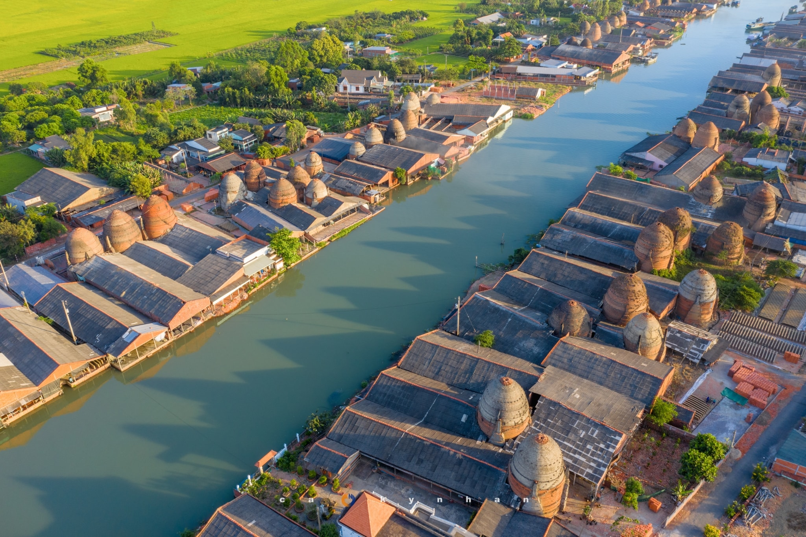

Văn hóa/Lịch sử
Ẩm thực: Ẩm thực của tỉnh Vĩnh Long mang đậm bản sắc miền Tây sông nước, phản ánh cuộc sống nông thôn và văn hóa dân gian của người dân vùng đất này. Với bánh tét 3 nhân, bánh tráng nem cù lao Lục Sĩ, cá lóc nướng trui,... là những đặc sản tiêu biểu nơi đây
Công trình, kiến trúc: Kiến trúc vô cùng phong phú, với những công trình cổ kính và lâu đời như: Cầu Mỹ Thuận, Thành Vĩnh Long, Đình Long Thanh, ...
Văn hóa Văn hóa ở tỉnh Vĩnh Long phản ánh rõ nét bản sắc của vùng đồng bằng sông nước miền Tây Nam Bộ Việt Nam, với sự kết hợp độc đáo giữa văn hóa dân tộc Kinh và văn hóa dân tộc Khmer. Bên canh đó là nghệ thuật dân gian được thể hiện qua các lễ hội truyền thống, các trò chơi dân gian, các loại hình nghệ thuật như: hát bè, kịch nói, múa rối...
 


